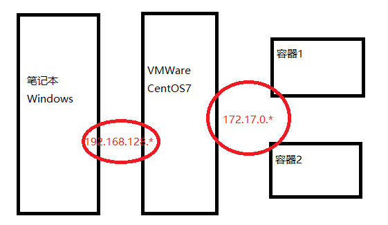

目标：了解Docker是什么、应用场景及其组成部分
小结：
目标：在线安装docker并使用命令启动、停止docker
分析：
小结：
需求更新yum源和镜像源安装docker；安装之后可以使用 docker -v
x# 启动systemctl start docker# 停止systemctl stop docker#查看docker启动状态systemctl status docker
目标：能够使用镜像的查看、搜索、拉取、删除命令
小结：
拉取：docker pull 镜像名称:版本号（若不指定则会拉取最新的版本）
删除全部镜像：docker rmi ` docker images -q ` （慎用）
目标：使用查看容器命令；拉取centos:7的镜像之后结合容器启动命令和选项 -it 启动交互式容器
分析：
小结：
xxxxxxxxxx# 查看容器docker ps -a# 创建并启动交互式容器docker run -it --name=mycentos7 centos:7 /bin/bash启动交互式容器之后是直接进入容器终端；可以查看容器的文件结构；使用exit命令则会退出终端并且停止容器。
目标：结合容器启动命令和选项 -di 启动守护式容器
分析：
创建并启动docker容器，可以在后台运行；
在创建交互式容器之后如果退出的话，容器处于停止状态，可以使用命令再次启动容器，使用命令进入容器并操作。
xxxxxxxxxx# 创建并启动守护式容器docker run -di --name=mycentos2 centos:7# 启动容器后再进入容器docker exec -it mycentos2 /bin/bash小结：
守护式容器在启动之后会一直在后台运行，即使进入容器之后执行exit命令也不会停止容器；
适用于需要长期运行容器的情况
目标：能够使用容器的停止、拷贝文件、目录挂载、查看IP、删除命令
小结：
容器停止、启动
拷贝文件：容器与宿主机之间的文件互拷
目录挂载：将宿主机的目录映射到容器对于目录
查看容器IP

容器删除：只能删除停止状态的容器；docker rm `docker ps -a -q`
目标：拉取mysql镜像，启动容器，操作容器中的mysql
分析：
拉取mysql镜像；
创建并启动守护式容器；
在容器中操作mysql；
使用图形界面工具（windows）操作在docker中安装的mysql；在创建mysql容器的时候使用-p指定端口映射实现连接
在创建容器的时候mysql的root用户可以指定远程访问的密码。
小结：
在创建容器的时候指定环境变量MYSQL_ROOT_PASSWORD表示使用root进行远程连接时候的密码。如果需要进行远程连接的话可以使用-p进行端口映射。
目标：拉取tomcat镜像，启动容器，操作容器中的tomcat
分析：
将项目文件上传到容器中的tomcat目录（webapps）
创建容器的时候可以指定-v进行目录挂载，tomcat在容器中的目录（/usr/local/tomcat/webapps）
可以通过外部浏览器访问容器中的项目
创建容器的时候可以指定-p进行端口映射
docker pull tomcatxxxxxxxxxxdocker run -di --name=mytomcat -p 9000:8080 -v /usr/local/tomcat/webapps:/usr/local/tomcat/webapps tomcat
访问容器中tomcat
小结：
上传项目文件可以使用容器的目录挂载功能，外部访问可以使用端口映射
目标：拉取nginx镜像，启动容器，访问nginx
分析：
nginx的默认访问端口是：80
在创建容器的时候需要进行端口映射，指定-p，映射的端口80
小结：
如果被占用了80端口，那么在指定映射的时候可以改变宿主机的端口映射，在访问时也需要带上端口号。
目标：拉取redis镜像，启动容器，操作容器中的redis
分析：
小结：
xxxxxxxxxx# 创建容器docker run -di --name=myredis -p 6379:6379 redis# 进入容器docker exec -it myredis /bin/bash
目标：docker-compose的作用；能够安装docker-compose
小结：
docker-compose是一个应用工具；可以通过配置docker-compose.yml文件同时启动多个容器。
部署项目时可以编写一个docker-compose.yml文件作为启动项目单位，同时启动项目相关的那些容器。
目标：编写模版文件同时启动docker容器
分析：
docker-compose可以实现一次启动多个容器；通过配置docker-compose模板文件（docker-compose.yml）,在这个配置文件中去配置各个容器及其相关的依赖。
小结：
docker-compose可以配置一个模板文件实现一次可以启动多个容器，运行时候可以执行一个up则会创建并启动模板文件中的各个服务。
模板文件是yml格式的；编写的时候需要注意其格式。
目标：能够将容器保存为镜像，备份，恢复镜像再启动以恢复的镜像作为基础的容器
分析：
在当前的容器中安装了各种组件；期望在其他服务器上也能快速拥有该容器的一切环境；可以将当前的容器制作为一个镜像，再将该奖项复制到其他服务器，其他服务器再基于镜像运行容器。
小结：
docker容器可以保存为一个镜像；备份为一个镜像包（*.tar）可以复制迁移到其他服务器，再恢复该tar包中的镜像，基于镜像运行容器实现环境的一致。
目标：使用Dockerfile创建一个自定义jdk1.8的镜像
分析：
假设在centos7作为基础镜像上；添加jdk1.8并构建一个包含jdk1.8的centos7新镜像。
-- Dockerfile可以实现；Dockerfile是由一系列命令和参数构成的文本文件，在文件中可以指定各个组件资源和运行命令等。
实现步骤：
小结：
Dockerfile可以基于镜像制作镜像；docker build -t='jdk1.8' .
目标：拉取、启动私有仓库镜像并可以访问私有仓库
小结：
拉取registry镜像；基于镜像创建私有仓库容器；需要去修改docker的一个配置文件指定私有仓库地址；再访问私有仓库：http://ip:5000/v2/_catalog
目标：将制作的jdk1.8的镜像上传到私有仓库
小结：
将本地镜像打标签（标记本地镜像为一个私有仓库中的镜像）；将打了标签的镜像推送到私有仓库。
目标：将私有仓库中的jdk1.8镜像拉取到本地
小结：
docker pull 私有仓库地址/镜像名称如果本地存在同名的镜像需要先删除镜像后拉取